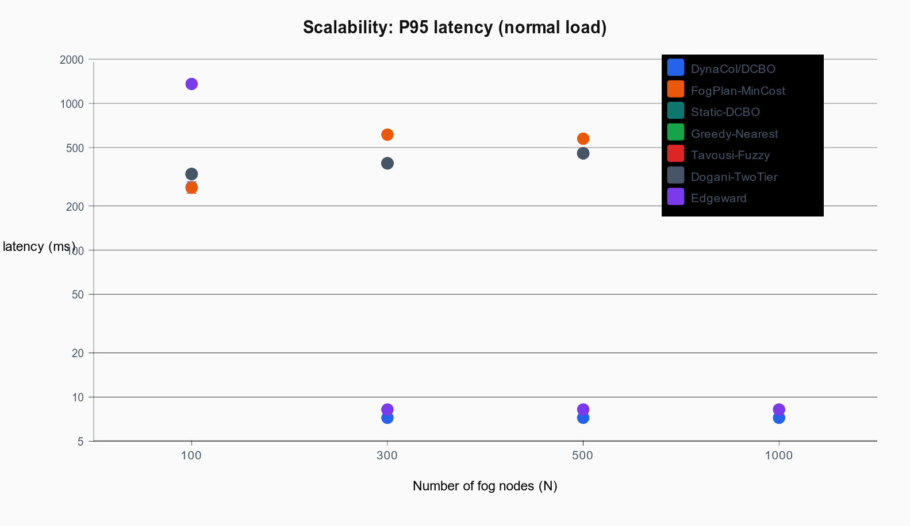
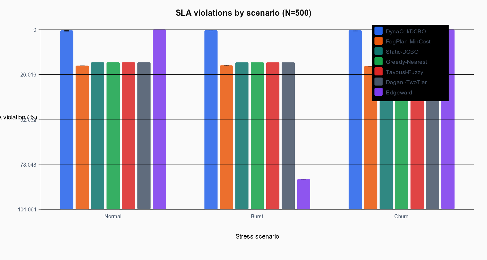
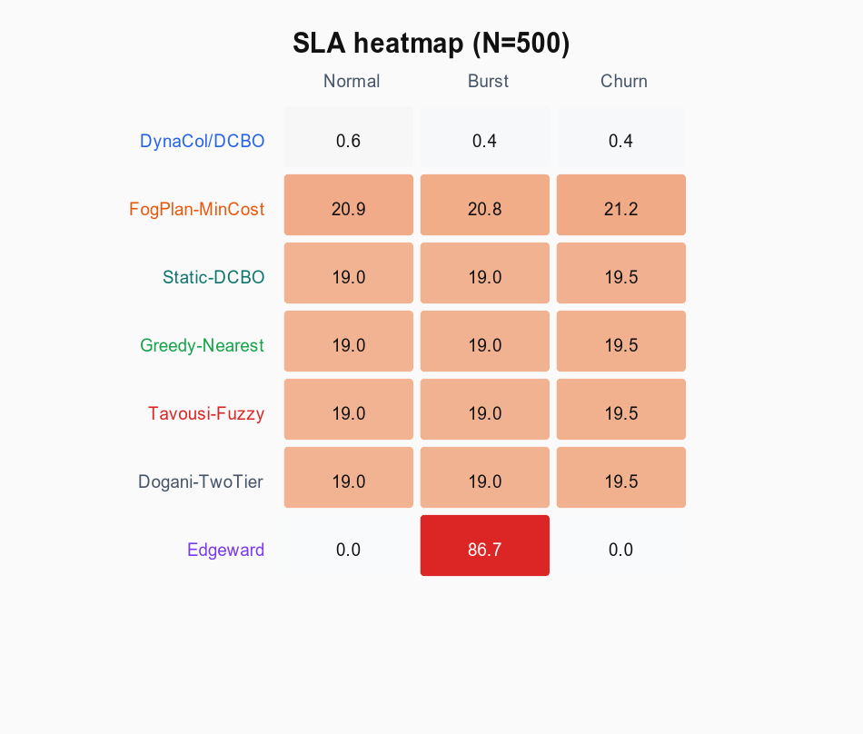
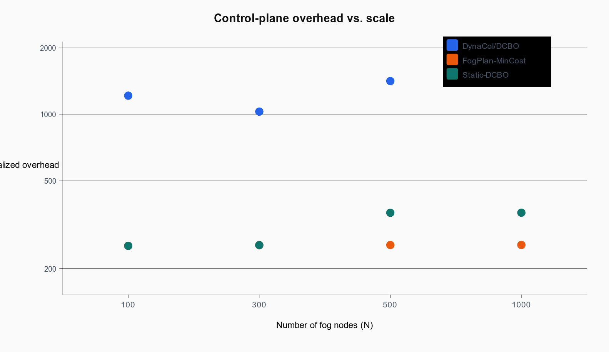
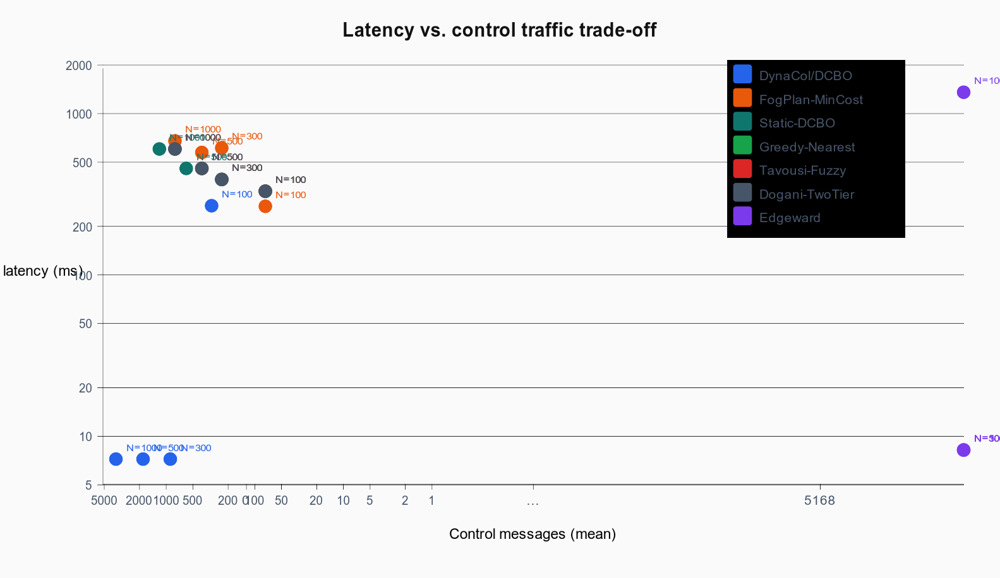

DynaCol Evaluation — Figure Gallery

fig_p95_scalability — P95 end-to-end latency across fog scale (log Y).

fig_sla_scenarios — SLA violation rate per stress scenario at N=500.

fig_sla_heatmap — Heatmap of SLA violations (N=500).

fig_overhead_scalability — Normalized control-plane overhead vs. N.

fig_tradeoff — P95 latency vs. control-message volume.